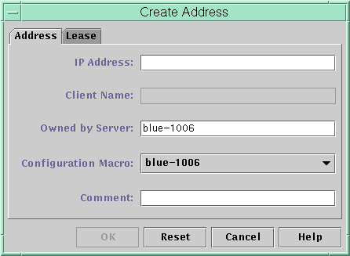
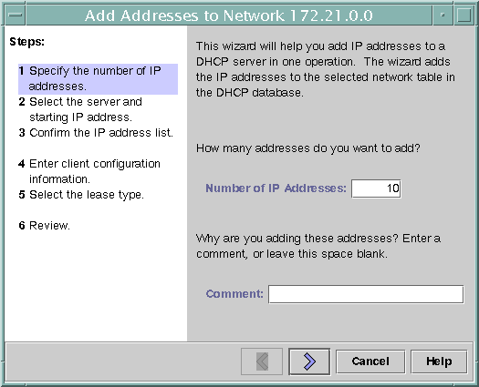
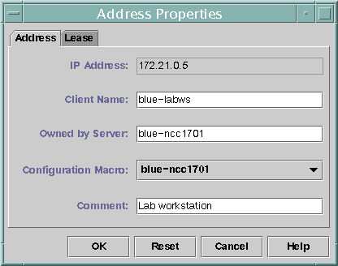
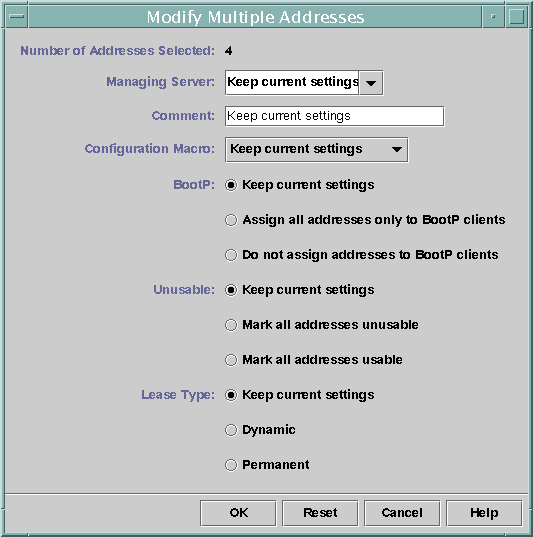
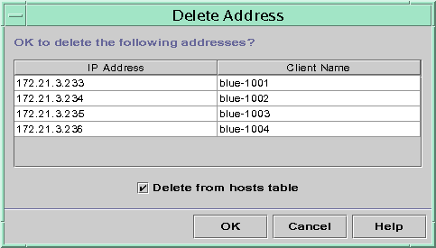
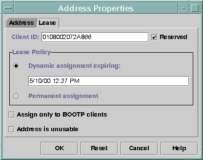

Document Information
Preface
Part I TCP/IP Administration
1. Solaris TCPIP Protocol Suite (Overview)
2. Planning an IPv4 Addressing Scheme (Tasks
3. Planning an IPv6 Addressing Scheme (Overview)
4. Planning an IPv6 Network (Tasks)
5. Configuring TCP/IP Network Services and IPv4 Addressing (Tasks)
6. Administering Network Interfaces (Tasks)
7. Enabling IPv6 on a Network (Tasks)
8. Administering a TCP/IP Network (Tasks)
9. Troubleshooting Network Problems (Tasks)
10. TCP/IP and IPv4 in Depth (Reference)
11. IPv6 in Depth (Reference)
Part II DHCP
12. About Solaris DHCP (Overview)
13. Planning for DHCP Service (Tasks)
14. Configuring the DHCP Service (Tasks)
15. Administering DHCP (Tasks)
About DHCP Manager
How to Start and Stop DHCP Manager
Setting Up User Access to DHCP Commands
How to Grant Users Access to DHCP Commands
Starting and Stopping the DHCP Service
How to Start and Stop the DHCP Service (DHCP Manager)
How to Enable and Disable the DHCP Service (DHCP Manager)
How to Enable and Disable the DHCP Service (dhcpconfig -S)
DHCP Service and the Service Management Facility
Modifying DHCP Service Options (Task Map)
How to Generate Verbose DHCP Log Messages (DHCP Manager)
How to Generate Verbose DHCP Log Messages (Command Line)
How to Enable and Disable DHCP Transaction Logging (DHCP Manager)
How to Enable and Disable DHCP Transaction Logging (Command Line)
How to Log DHCP Transactions to a Separate syslog File
How to Enable Dynamic DNS Updating for DHCP Clients
How to Customize DHCP Performance Options (DHCP Manager)
How to Customize DHCP Performance Options (Command Line)
Adding, Modifying, and Removing DHCP Networks (Task Map)
How to Specify Network Interfaces for DHCP Monitoring (DHCP Manager)
How to Specify Network Interfaces for DHCP Monitoring (dhcpconfig)
How to Add a DHCP Network (DHCP Manager)
How to Add a DHCP Network (dhcpconfig)
How to Modify the Configuration of a DHCP Network (DHCP Manager)
How to Modify the Configuration of a DHCP Network (dhtadm)
How to Remove a DHCP Network (DHCP Manager)
How to Remove a DHCP Network (pntadm)
Supporting BOOTP Clients With the DHCP Service (Task Map)
How to Set Up Support of Any BOOTP Client (DHCP Manager)
How to Set Up Support of Registered BOOTP Clients (DHCP Manager)
Working With DHCP Macros (Task Map)
How to View Macros Defined on a DHCP Server (DHCP Manager)
How to View Macros Defined on a DHCP Server (dhtadm)
How to Change Values for Options in a DHCP Macro (DHCP Manager)
How to Change Values for Options in a DHCP Macro (dhtadm)
How to Add Options to a DHCP Macro (DHCP Manager)
How to Add Options to a DHCP Macro (dhtadm)
How to Delete Options From a DHCP Macro (DHCP Manager)
How to Delete Options From a DHCP Macro (dhtadm)
How to Create a DHCP Macro (DHCP Manager)
How to Create a DHCP Macro (dhtadm)
How to Delete a DHCP Macro (DHCP Manager)
How to Delete a DHCP Macro (dhtadm)
Working With DHCP Options (Task Map)
How to Create DHCP Options (DHCP Manager)
How to Create DHCP Options (dhtadm)
How to Modify DHCP Option Properties (DHCP Manager)
How to Modify DHCP Option Properties (dhtadm)
How to Delete DHCP Options (DHCP Manager)
How to Delete DHCP Options (dhtadm)
Supporting Solaris Network Installation With the DHCP Service
Supporting Remote Boot and Diskless Boot Clients (Task Map)
Setting Up DHCP Clients to Receive Information Only (Task Map)
Converting to a New DHCP Data Store
How to Convert the DHCP Data Store (DHCP Manager)
How to Convert the DHCP Data Store (dhcpconfig -C)
Moving Configuration Data Between DHCP Servers (Task Map)
How to Export Data From a DHCP Server (DHCP Manager)
How to Export Data From a DHCP Server (dhcpconfig -X)
How to Import Data on a DHCP Server (DHCP Manager)
How to Import Data on a DHCP Server (dhcpconfig -I)
How to Modify Imported DHCP Data (DHCP Manager)
How to Modify Imported DHCP Data (pntadm, dhtadm)
16. Configuring and Administering DHCP Clients
17. Troubleshooting DHCP (Reference)
18. DHCP Commands and Files (Reference)
Part III IP Security
19. IP Security Architecture (Overview)
20. Configuring IPsec (Tasks)
21. IP Security Architecture (Reference)
22. Internet Key Exchange (Overview)
23. Configuring IKE (Tasks)
24. Internet Key Exchange (Reference)
25. Solaris IP Filter (Overview)
26. Solaris IP Filter (Tasks)
Part IV Mobile IP
27. Mobile IP (Overview)
28. Administering Mobile IP (Tasks)
29. Mobile IP Files and Commands (Reference)
Part V IPMP
30. Introducing IPMP (Overview)
31. Administering IPMP (Tasks)
Part VI IP Quality of Service (IPQoS)
32. Introducing IPQoS (Overview)
33. Planning for an IPQoS-Enabled Network (Tasks)
34. Creating the IPQoS Configuration File (Tasks)
35. Starting and Maintaining IPQoS (Tasks)
36. Using Flow Accounting and Statistics Gathering (Tasks)
37. IPQoS in Detail (Reference)
Glossary
Index
|
Working With IP Addresses in the DHCP Service (Task Map)
You can use DHCP Manager or the pntadm command to add IP addresses,
modify address properties, and remove addresses from the DHCP service. Before you work
with IP addresses, you should refer to Table 15-4 to become familiar with IP
address properties. The table provides information for users of DHCP Manager and pntadm.
Note - Table 15-4 includes examples of using pntadm to specify IP address properties while adding and
modifying IP addresses. Refer also to the pntadm(1M) man page for more
information about pntadm.
The following task map lists tasks that you must perform to add, modify,
or remove IP addresses. The task map also contains links to the
procedures used to carry out the tasks. The following table lists and describes the properties of IP addresses. Table 15-4 IP Address PropertiesProperty |
Description |
How
to Specify in pntadm Command |
|---|
Network address |
The address of the network that contains
the IP address that you are working with. The network address is displayed in
the Networks list within the Addresses tab in DHCP Manager. |
The network address must
be the last argument on the pntadm command line used to create, modify,
or delete an IP address. For example, to add an IP address to
network 10.21.0.0, you would type: pntadm -A ip-address options 10.21.0.0 |
IP address |
The address you are working with, whether you
are creating, modifying, or deleting the address. The IP address is displayed in the
first column of the DHCP Manager's Addresses tab. |
The IP address must accompany the
-A, -M, and -D options to the pntadm command. For example, to modify IP
address 10.21.5.12, you would type: pntadm -M 10.21.5.12 options 10.21.0.0 |
Client name |
The host name mapped to the IP address
in the hosts table. This name can be automatically generated by DHCP Manager
when addresses are created. If you create a single address, you can supply
the name. |
Specify the client name with the -h option. For example, to specify
client name carrot12 for 10.21.5.12, you would type: pntadm -M 10.21.5.12 -h carrot12 10.21.0.0 |
Owned by server |
The DHCP server
that manages the IP address and responds to the DHCP client's request for
IP address allocation. |
Specify the owning server name with the -s option. For example
to specify server blue2 to own 10.21.5.12, you would type: pntadm -M 10.21.5.12 -s blue2 10.21.0.0 |
Configuration macro |
The macro
that the DHCP server uses to obtain network configuration options from the dhcptab
table. Several macros are created automatically when you configure a server, and when
you add networks. See About DHCP Macros for more information about macros. When addresses are
created, a server macro is also created. The server macro is assigned as
the configuration macro for each address. |
Specify the macro name with the -m
option. For example, to assign the server macro blue2 to address 10.21.5.12, you would
type: pntadm -M 10.21.5.12 -m blue2 10.21.0.0 |
Client ID |
A text string that is unique within the DHCP service. If the
client ID is listed as 00, the address is not allocated to
any client. If you specify a client ID when modifying the properties of
an IP address, the address is bound exclusively to that client. The client ID
is determined by the vendor of the DHCP client. If your client is
not a Solaris DHCP client, consult your DHCP client documentation for more information. |
Specify
the client ID with the -i option. For example, to assign client ID
08002094121E to address 10.21.5.12, you would type: pntadm -M 10.21.5.12 -i 0108002094121E 10.21.0.0 |
|
For Solaris DHCP clients, the client ID
is derived from the client's hexadecimal hardware address. The client ID includes a
prefix that represents the ARP code for the type of network, such as
01 for Ethernet. The ARP codes are assigned by the Internet Assigned Numbers
Authority (IANA) in the ARP Parameters section of the Assigned Numbers standard at
http://www.iana.com/numbers.html For example, a Solaris client with the hexadecimal Ethernet address 8:0:20:94:12:1e uses
the client ID 0108002094121E. The client ID is listed in DHCP Manager and
pntadm when a client is currently using an address. Tip: As superuser on the
Solaris client system, type the following command to obtain the Ethernet address for the
interface: ifconfig -a |
|
Reserved |
The setting that specifies the address is reserved exclusively for the client
indicated by the client ID, and the DHCP server cannot reclaim the address.
If you choose this option, you manually assign the address to the client. |
Specify
that the address is reserved, or manual, with the -f option. For
example, to specify that IP address 10.21.5.12 is reserved for a client, you
would type: pntadm -M 10.21.5.12 -f MANUAL 10.21.0.0 |
Lease type or policy |
The setting that determines how DHCP manages the
use of IP addresses by clients. A lease is either dynamic or permanent.
See Dynamic and Permanent Lease Types for a complete explanation. |
Specify that the address is permanently assigned with
the -f option. Addresses are dynamically leased by default. For example, to specify that
IP address 10.21.5.12 has a permanent lease, you would type: pntadm -M 10.21.5.12 -f PERMANENT 10.21.0.0 |
Lease expiration date |
The date
when the lease expires, applicable only when a dynamic lease is specified. The
date is specified in mm/dd/yyyy format. |
Specify a lease expiration date with the
-e option. For example, to specify an expiration date of January 1, 2006,
you would type: pntadm -M 10.21.5.12 -e 01/01/2006 10.21.0.0 |
BOOTP setting |
The setting that marks the address as reserved for BOOTP
clients. See Supporting BOOTP Clients With the DHCP Service (Task Map) for more information about supporting BOOTP clients. |
Reserve an address
for BOOTP clients with the -f option. For example, to reserve IP address
10.21.5.12 for BOOTP clients, you would type: pntadm -M 10.21.5.12 -f BOOTP 10.21.0.0 |
Unusable setting |
The setting that marks the address
to prevent assignment of the address to any client. |
Mark an address as unusable
with the -f option. For example, to mark IP address 10.21.5.12 as unusable, you
would type: pntadm -M 10.21.5.12 -f UNUSABLE 10.21.0.0 |
Adding IP Addresses to the DHCP Service
Before you add IP addresses, you must add the network that owns the
addresses to the DHCP service. See Adding DHCP Networks for information about adding networks. You can add addresses with DHCP Manager or the pntadm command. On networks that are already managed by the DHCP service, you can
add addresses in several ways with DHCP Manager:
Add a single IP address – Place one new IP address under DHCP management. Duplicate an existing IP address – Copy the properties of an existing IP address managed by DHCP, and supply a new IP address and client name. Add a range of multiple IP addresses – Use the Address Wizard to place a series of IP addresses under DHCP management.
The following figure shows the Create Address dialog box. The Duplicate Address dialog
box is identical to the Create Address dialog box, except that the text
fields display the values for an existing address. Figure 15-8 Create Address Dialog Box in DHCP Manager The following figure shows the first dialog of the Add Addresses to Network
wizard, used to add a range of IP addresses. Figure 15-9 Add Addresses to Network Wizard in DHCP Manager
How to Add a Single IP Address (DHCP Manager)
- In DHCP Manager, select the Addresses tab.
See How to Start and Stop DHCP Manager for information about DHCP Manager.
- Select the network where the new IP address is to be added.
- Choose Create from the Edit menu.
The Create Address dialog box opens.
- Select or type values for the address settings on the Address and Lease
tabs.
Select the Help button to open a web browser to display help for
the dialog box. Also, see Table 15-4 for detailed information about the settings.
- Click OK.
How to Duplicate an Existing IP Address (DHCP Manager)
- In DHCP Manager, select the Addresses tab.
See How to Start and Stop DHCP Manager for information about DHCP Manager.
- Select the network where the new IP address is located.
- Select the address with properties that you want to duplicate.
- Choose Duplicate from the Edit menu.
- Specify the new IP address in the IP Address field.
- (Optional) Specify a new client name for the address.
You cannot use the same name that is used by the address
that you are duplicating.
- (Optional) Modify other option values, if necessary.
Most other option values should remain the same.
- Click OK.
How to Add Multiple IP Addresses (DHCP Manager)
- In DHCP Manager, select the Addresses tab.
See How to Start and Stop DHCP Manager for information about DHCP Manager.
- Select the network where the new IP addresses are to be added.
- Choose Address Wizard from the Edit menu.
The Add Addresses to Network dialog box prompts you to provide values for
the IP address properties. See Table 15-4 for more information about the properties,
or select the Help button in the dialog box. Making Decisions for IP Address Management (Task Map) includes more extensive
information.
- Click the right arrow button as you finish each screen, and click Finish
on the last screen.
The Addresses tab is updated with the new addresses.
How to Add IP Addresses (pntadm)
- Become superuser or assume a role or user name that is assigned to
the DHCP Management profile.
For more information about the DHCP Management profile, see Setting Up User Access to DHCP Commands. Roles contain authorizations and privileged commands. For more information about roles, see Configuring RBAC (Task Map) in System Administration Guide: Security Services.
- Add IP addresses by typing a command of the following format:
# pntadm -A ip-address options network-address Refer to the pntadm(1M) man page for a list of options you can
use with pntadm -A. In addition, Table 15-4 shows some sample pntadm commands that specify options.
Note - You can write a script to add multiple addresses with pntadm. See
Example 18-1 for an example.
Modifying IP Addresses in the DHCP Service
You can modify any of the address properties described in Table 15-4 by
using DHCP Manager or the pntadm -M command. See the pntadm(1M) man page for
more information about pntadm -M. The following figure shows the Address Properties dialog box that you use to
modify IP address properties. Figure 15-10 Address Properties Dialog Box in DHCP Manager The following figure shows the Modify Multiple Addresses dialog box that you use
to modify multiple IP addresses. Figure 15-11 Modify Multiple Addresses Dialog Box in DHCP Manager
How to Modify IP Address Properties (DHCP Manager)
- In DHCP Manager, select the Addresses tab.
See How to Start and Stop DHCP Manager for information about DHCP Manager.
- Select the IP address's network.
- Select one or more IP addresses to modify.
If you want to modify more than one address, press the Control
key while you click with the mouse to select multiple addresses. You can
also press the Shift key while you click to select a block of
addresses.
- Choose Properties from the Edit menu.
The Address Properties dialog box or the Modify Multiple Address dialog box opens.
- Change the appropriate properties.
Click the Help button, or refer to Table 15-4 for information about the
properties.
- Click OK.
How to Modify IP Address Properties (pntadm)
- Become superuser or assume a role or user name that is assigned to
the DHCP Management profile.
For more information about the DHCP Management profile, see Setting Up User Access to DHCP Commands. Roles contain authorizations and privileged commands. For more information about roles, see Configuring RBAC (Task Map) in System Administration Guide: Security Services.
- Modify IP address properties by typing a command of the following format:
# pntadm -M ip-address options network-address Many options can be used with the pntadm command, which are documented in
the pntadm(1M) man page. Table 15-4 shows some sample pntadm commands that specify options.
Removing IP Addresses From the DHCP Service
At times, you might want the DHCP service to stop managing a
particular IP address or group of addresses. The method that you use to
remove an address from DHCP depends on whether you want the change to
be temporary or permanent.
Marking IP Addresses as Unusable by the DHCP Service
You can use the pntadm -M command with the -f UNUSABLE option to mark
addresses as unusable. In DHCP Manager, you use the Address Properties dialog box, shown in
Figure 15-10, to mark individual addresses. You use the Modify Multiple Addresses dialog box,
show in Figure 15-11, to mark multiple addresses, as described in the following procedure.
How to Mark IP Addresses as Unusable (DHCP Manager)
- In DHCP Manager, select the Addresses tab.
See How to Start and Stop DHCP Manager for information about DHCP Manager.
- Select the IP address's network.
- Select one or more IP addresses to mark as unusable.
If you want to mark more than one address as unusable, press the
Control key while you click with the mouse to select multiple addresses. You
can also press the Shift key while you click to select a
block of addresses.
- Choose Properties from the Edit menu.
The Address Properties dialog box or the Modify Multiple Address dialog box opens.
- If you are modifying one address, select the Lease tab.
- Select Address is Unusable.
If you are editing multiple addresses, select Mark All Addresses Unusable.
- Click OK.
How to Mark IP Addresses as Unusable (pntadm)
- Become superuser or assume a role or user name that is assigned to
the DHCP Management profile.
For more information about the DHCP Management profile, see Setting Up User Access to DHCP Commands. Roles contain authorizations and privileged commands. For more information about roles, see Configuring RBAC (Task Map) in System Administration Guide: Security Services.
- Mark IP addresses as unusable by typing a command of the following format:
# pntadm -M ip-address -f UNUSABLE network-address For example, to mark address 10.64.3.3 as unusable, type: pntadm -M 10.64.3.3 -f UNUSABLE 10.64.3.0
Deleting IP Addresses From the DHCP Service
You should delete IP addresses from the DHCP network tables if you
no longer want the address to be managed by DHCP. You can use
the pntadm -D command or DHCP Manager's Delete Address dialog box. The following figure shows the Delete Address dialog box. Figure 15-12 Delete Address Dialog Box in DHCP Manager
How to Delete IP Addresses From DHCP Service (DHCP Manager)
- In DHCP Manager, select the Addresses tab.
See How to Start and Stop DHCP Manager for information about DHCP Manager.
- Select the IP address's network.
- Select one or more IP addresses to delete.
If you want to delete more than one address, press the Control
key while you click with the mouse to select multiple addresses. You can
also press the Shift key while you click to select a block of
addresses.
- Choose Delete from the Edit menu.
The Delete Address dialog box lists the address that you selected so that
you can confirm the deletion.
- If you want to delete the host names from the hosts table, select
Delete From Hosts Table.
If the host names were generated by DHCP Manager, you might want to
delete the names from the hosts table.
- Click OK.
How to Delete IP Addresses From the DHCP Service (pntadm)
- Become superuser or assume a role or user name that is assigned to
the DHCP Management profile.
For more information about the DHCP Management profile, see Setting Up User Access to DHCP Commands. Roles contain authorizations and privileged commands. For more information about roles, see Configuring RBAC (Task Map) in System Administration Guide: Security Services.
- Delete IP addresses by typing a command of the following format:
# pntadm -D ip-address options network-address If you include the -y option, the host name is deleted from the
name service that maintains the host name. For example, to delete address 10.64.3.3 from network 10.64.3.0, and delete the corresponding host
name, type: pntadm -D 10.64.3.3 -y 10.64.3.0
Assigning a Reserved IP Address to a DHCP Client
The Solaris DHCP service attempts to provide the same IP address to a
client that has previously obtained an address through DHCP. However, sometimes an address
has already been reassigned to another client. Routers, NIS or NIS+ servers, DNS servers, and other hosts that are critical
to the network should not be DHCP clients. Hosts that provide services to
the network should not rely on the network to obtain their IP
addresses. Clients such as print servers or file servers should have consistent IP
addresses as well. These clients can receive their network configurations and also be assigned
a consistent IP address from the DHCP server. You can set up the DHCP server to supply the same IP
address to a client each time the client requests its configuration. You reserve
the IP address for the client by manually assigning the client's ID to
the address that you want the client to use. You can set up
the reserved address to use either a dynamic lease or a permanent lease.
If the client's address uses a dynamic lease, you can easily track the
use of the address. A diskless client is an example of a client
that should use a reserved address with a dynamic lease. If the client's
address uses a permanent lease, you cannot track address use. Once a client
obtains a permanent lease, the client does not contact the server again. The
client can obtain updated configuration information only by releasing the IP address and
restarting the DHCP lease negotiation. You can use the pntadm -M command or DHCP Manager's Address Properties dialog box
to set up lease properties. The following figure shows the Lease tab of the Address Properties dialog box,
which is used to modify the lease. Figure 15-13 Address Properties Lease Tab in DHCP Manager
How to Assign a Consistent IP Address to a DHCP Client (DHCP Manager)
- In DHCP Manager, select the Addresses tab.
See How to Start and Stop DHCP Manager for information about DHCP Manager.
- Select the appropriate network.
- Double-click the IP address that you want to the client to use.
The Address Properties window opens.
- Select the Lease tab.
- In the Client ID field, type the client ID.
The client ID is derived from the client's hardware address. See the Client
ID entry in Table 15-4 for more information.
- Select the Reserved option to prevent the IP address from being reclaimed by
the server.
- In the Lease Policy area of the window, select Dynamic or Permanent assignment.
Select Dynamic if you want the client to negotiate to renew leases, which
enables you to track when the address is used. Because you selected Reserved,
the address cannot be reclaimed even when a dynamic lease is assigned. You
do not need to specify an expiration date for this lease. The DHCP
server calculates the expiration date by using the lease time. If you select Permanent, you cannot track the use of the IP address
unless you enable transaction logging.
- Click OK.
How to Assign a Consistent IP Address to a DHCP Client (pntadm)
- Become superuser or assume a role or user name that is assigned to
the DHCP Management profile.
For more information about the DHCP Management profile, see Setting Up User Access to DHCP Commands. Roles contain authorizations and privileged commands. For more information about roles, see Configuring RBAC (Task Map) in System Administration Guide: Security Services.
- Set the lease flags by typing a command of the following format:
# pntadm -M ip-address -i client-id -f MANUAL+BOOTP network-address For example, to enable the Solaris DHCP client whose MAC address is
08:00:20:94:12:1E to always receive IP address 10.21.5.12, you would type: pntadm -M 10.21.5.12 -i 0108002094121E -f MANUAL+BOOTP 10.21.0.0
Tip - Refer to the Client ID entry in Table 15-4 for more information about
how to determine client identifiers.
|